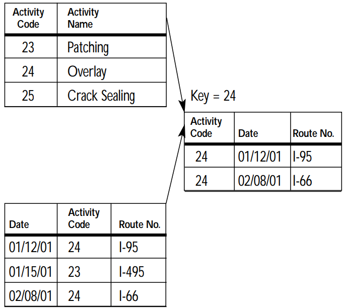
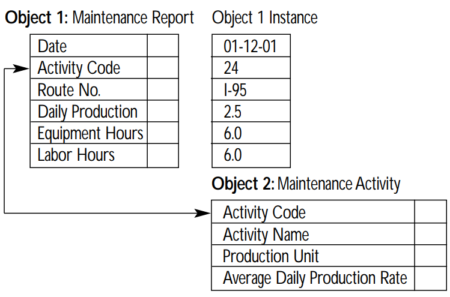
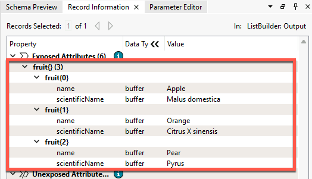
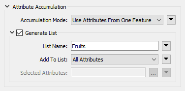
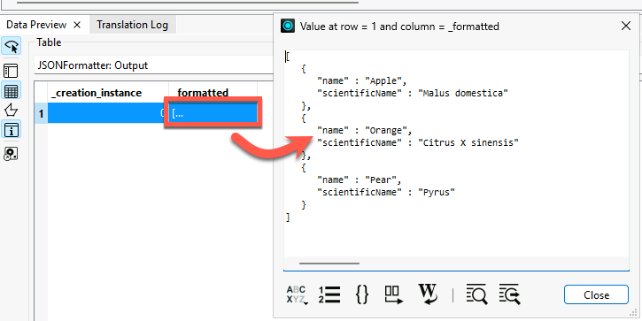
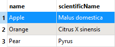
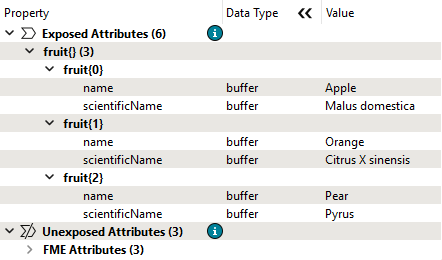
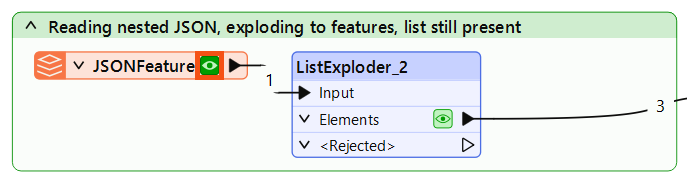
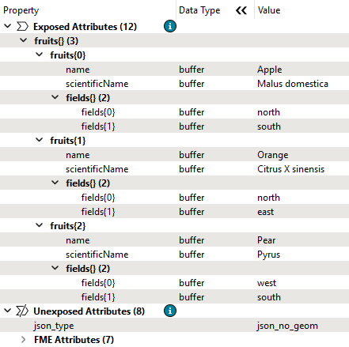

As is common practice in computer programming, list indexes in FME start at 0, not 1.
After completing this lesson, you’ll be able to:
In this lesson, you will:
List attributes, sometimes called lists, are FME's way of allowing an attribute to store multiple values per record. For example, rather than creating a text field named FRUITS that stores the value “Apple, Orange, Pear”, a user can create a list, which is more structured and can be broken down into constituent parts for processing:
Fruits{0}: Apple Fruits{1}: Orange Fruits{2}: Pear
In FME, list attributes are denoted using curly brackets after the list name (e.g., this list is called Fruits{}), and a number inside the curly brackets represents the element's index inside the list, e.g., Orange is element 1 in the list. This structure allows list attributes to be reorganized, exploded into individual parts, analyzed statistically, and more.
As is common practice in computer programming, list indexes in FME start at 0, not 1.
Data can be modeled in many ways. Some of the most common methods include:
List attributes in FME can be used to deal with these different data models in a single workspace.
Flat-file databases consist of tables that do not maintain relationships with other tables. These databases are intentionally simple and often small. Often, the data is stored as delimited text files, but it can also be stored as binary.
Flat file databases are easy to read with FME using readers from formats like CSV or Text File. In this case, list attributes are not required unless you want to store data about a one-to-many relationship on records (more on that below).
Relational databases store data in tables that can be linked to each other through defined relationships. FME can process relational data without using list attributes.
Here is an example from the United States Department of Transportation. A relational data model stores separate tables defining road maintenance activities and events. These tables can be linked by a shared key, in this case, an Activity Code:

FME would read each table as a feature type, with each row becoming a record. In this case, list attributes are not required unless you want to store data about a one-to-many relationship on records (more on that below).
Object-oriented data models store data on objects, commonly as a key-value pair.
Consider a similar dataset to the one above. The same data could instead be stored using an object-oriented model, where one object is a Maintenance Report and another is a definition of a Maintenance Activity. Data is stored as instances of these objects and can be linked by the values of specific key-value pairs, in this case, the value of Activity Code:

List attributes let you store object-oriented data in FME's feature-based or table-based framework.
When incorporating Python or R code into your workspace using the PythonCaller or RCaller, you can read Python or R lists/arrays as FME list attributes after executing the code.
List attributes can also represent a nested data structure within FME's feature-based paradigm.
For example, you can store the following JSON:
[{"name": "Apple","scientificName": "Malus domestica"},{"name": "Orange","scientificName": "Citrus X sinensis"},{"name": "Pear","scientificName": "Pyrus"}]
as an FME list attribute:
Fruits{0}.name: Apple Fruits{0}.scientificName: Malus domestica Fruits{1}.name: Orange Fruits{1}.scientificName: Citrus X sinensis Fruits{2}.name: Pear Fruits{2}.scientificName: Pyrus
Working with JSON and XML in FME requires deciding how to extract the nested structure into a mix of FME records and list attributes.
For more on working with nested data structures, see Getting Started with JSON or Getting Started with XML.
You can inspect list attributes using the Record Information Window. Select the record you want to inspect. You will notice that list attributes are not included as attributes in Table View. Instead, look for the attribute in the Record Information Window under Exposed or Unexposed Attributes. Each index and value will have its own row in the tree. You can double-click an item to inspect the full value.

Because they contain more values than can fit in a single cell of the Table View, list attributes cannot be exposed and will not appear in Table View or, in most cases, in written data. Several transformers are available to help you extract data from list attributes and use it in your workspace or written data (see the next lesson).
List attributes have many use cases within FME because they let a single attribute store multiple values per record.
Reading and writing data
Some data formats commonly use lists when read and written using FME. In addition to nested markup languages like XML and JSON discussed above, you might also encounter lists when reading:
Express relationships
For example, listing the names of all the stores in a neighborhood in a list called Store_Names{}. FME transformers that conduct spatial analysis, like the Overlayer family of transformers, often generate list attributes like this.
"Looping" with FME
Many new FME users ask how to create loops in a workspace. While custom transformers do support looping, you can almost always accomplish the desired goal using one of two superior methods:
List attributes can be used to avoid loops by storing all the relevant values in a list and then using a list transformer like those shown here to explode, search, sort, or otherwise extract values to find the desired information. An advantage is that list attributes process much quicker than loops. Even if you do use looping in a custom transformer, it's easier to apply a custom transformer loop to elements in a list than to a series of records.
For an example of these techniques in action, check out Question of the Week: To Loop or Not to Loop from the FME Community.
List attributes can be manually built, created automatically by a transformer, read and written by some formats (e.g., XML and JSON), or "exploded" into single-value attributes. FME has 15 transformers for list manipulation (plus more on FME Hub; see the next lesson for details), and over 80 transformers can produce list attributes. Transformers often create a list when attributes from different records are grouped into a single record. Transformers that create list attributes usually have a "Generate List" checkbox under the "Attribute Accumulation" section of their parameters dialog:

Checking "Generate List" can significantly impact workspace performance, as list attributes can drastically increase the size of individual records. It's best practice only to check this box when needed and remove list attributes as soon as possible so they do not unnecessarily slow down your workspace. For more performance tips, check out the Optimize Workspace Performance course.
To learn more, visit About List Attributes in the documentation.

Jennifer is new to working with list attributes. Her workspace reads JSON files, builds lists from the data, and explodes those lists into individual FME records. To confirm how each part of the workspace handles list attribute data, she needs to explore the data through each bookmark section.
In this exercise, you will:
Review the first section of your workspace to see how JSON data is read and stored as a flat attribute.

See how the same JSON data can be read directly as individual FME records instead of as a single attribute.

See how a ListBuilder combines individual FME records back into a single list attribute.

See how a ListExploder reverses the process, converting list elements back into individual records.
See how FME reads a JSON file that contains nested arrays, where each fruit has an additional list of farm field directions.
{ "fruits" : [ { "name" : "Apple", "scientificName" : "Malus domestica", "fields" : [ "north", "south" ] }, { "name" : "Orange", "scientificName" : "Citrus X sinensis", "fields" : [ "north", "east" ] }, { "name" : "Pear", "scientificName" : "Pyrus", "fields" : [ "west", "south" ] } ]}
Not all JSON structures translate cleanly into FME records. Explore what happens when you try to read a nested JSON file directly using a JSON reader.


Use a ListExploder to convert the nested fruits list into individual records, and observe what happens to the nested fields list.
As you were reviewing your workspace, you noticed that the fields list was not visible in the Data Preview table view. After inspecting more carefully in the Record Information window, you can see it is still present as a list attribute on each record and was not exploded along with the fruits list.
How would you create more records so there is one record per fruit, per field?
In this challenge, you will:
Your results should produce records with a schema like this:
Attribute(string: UTF-8) : `fields' has value `north'Attribute(string: UTF-8) : `name' has value `Apple'Attribute(string: UTF-8) : `scientificName' has value `Malus domestica'
Add a second ListExploder in the Exercise bookmark and connect it to the Elements output port of ListExploder_2. Then configure it as follows:
Each output record will now have one value for name, one value for scientificName, and one value for fields, giving you one record per fruit, per field.
🔍 Check your results
Open the completed workspace (C:\FMEData\Workspaces\AdvancedDataTransformation\what-are-list-attributes-complete.fmw).